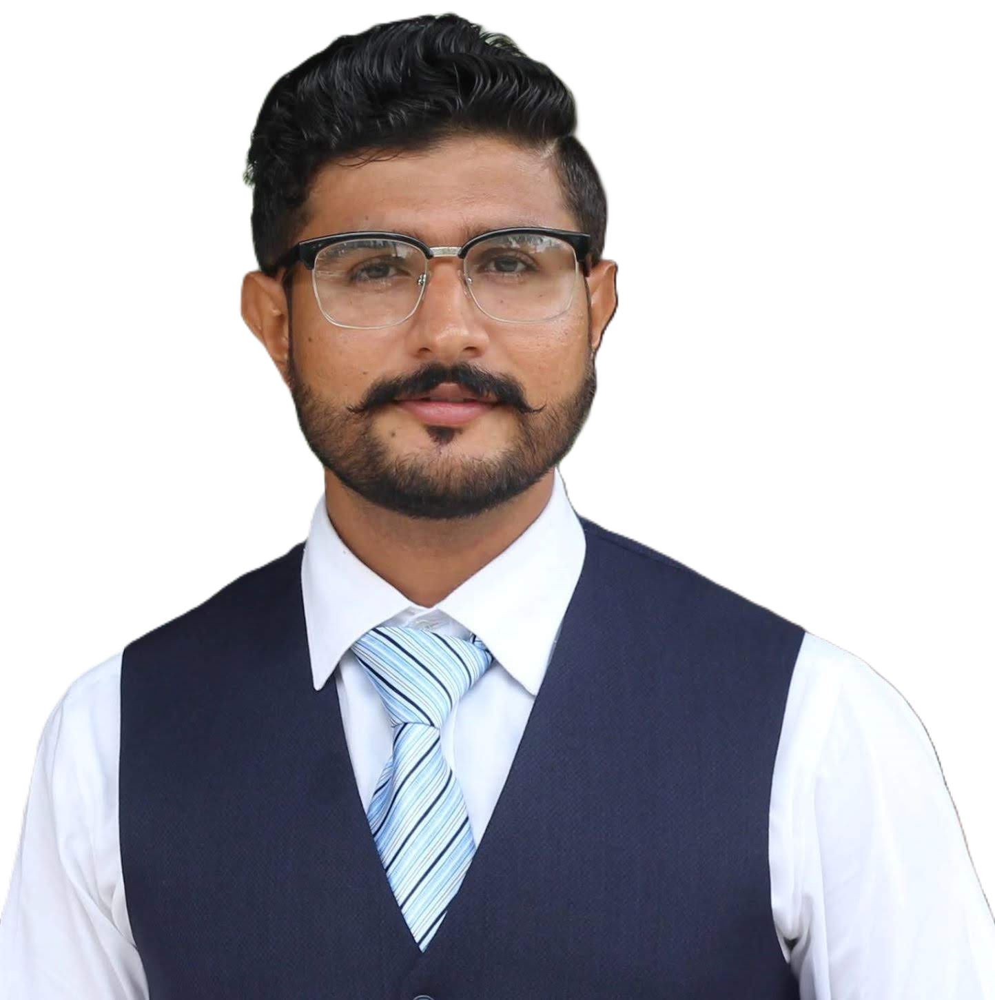

Adnan Tariq
MS Bioinformatics
NUST, Islamabad
I'm a Bioinformatics specialist with expertise in Microbiome–Host Interactions, Metagenomic Analysis, and NGS Data Interpretation. My research focuses on leveraging computational biology to understand complex biological systems and develop predictive models for disease outcomes.
With advanced skills in Linux, Bash Scripting, Machine Learning, and Programming (Python/R), I bridge the gap between biology and data science to extract meaningful insights from large-scale genomic datasets.
Genomics
NGS & Metagenomics
AI/ML
Predictive Modeling
Development
Bioinformatics Pipelines
Education
MS in Bioinformatics
National University of Sciences & Technology (NUST), Islamabad (2022–2024)
Thesis: Gut Microbiome Analysis in Type 2 Diabetes Patients
BS in Bioinformatics
Quaid-i-Azam University (QAU), Islamabad (2017–2021)
Research Interests
- Next-Generation Sequencing & Computational Genomics
- Machine Learning Applications in Bioinformatics
- Human Microbiome & Host-Environment Interactions
- Cloud Computing for Large-Scale Biological Data
- Antimicrobial Resistance Prediction Models
- Cancer Genomics & Immunotherapy Response